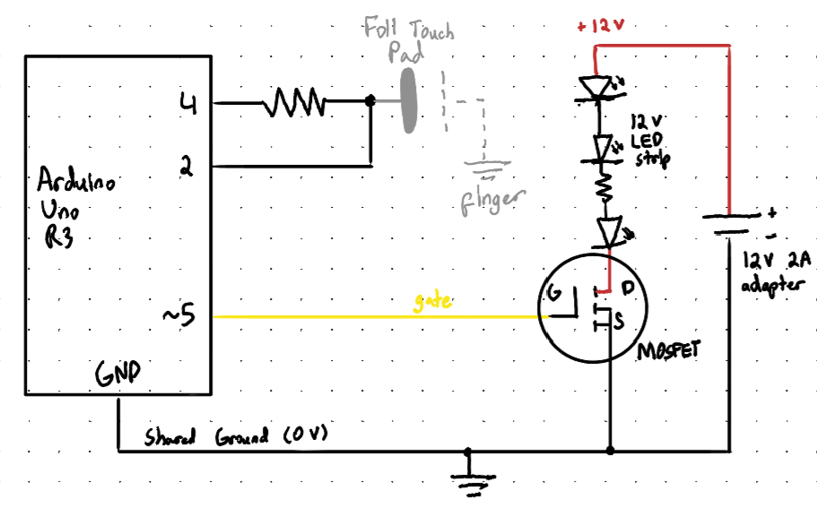
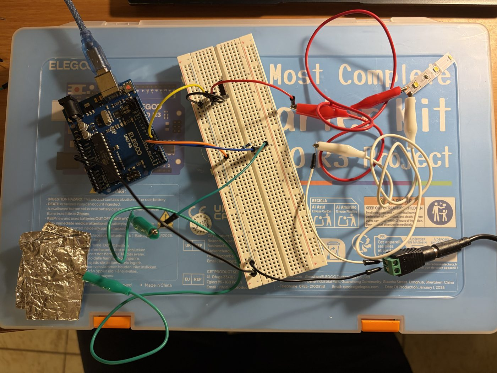
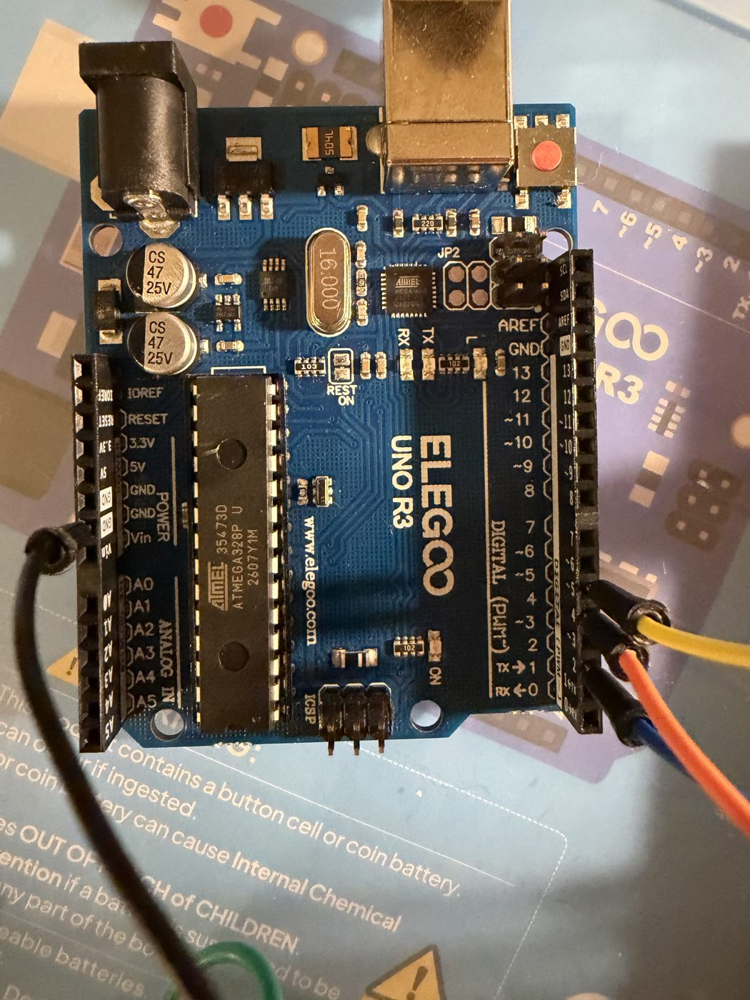
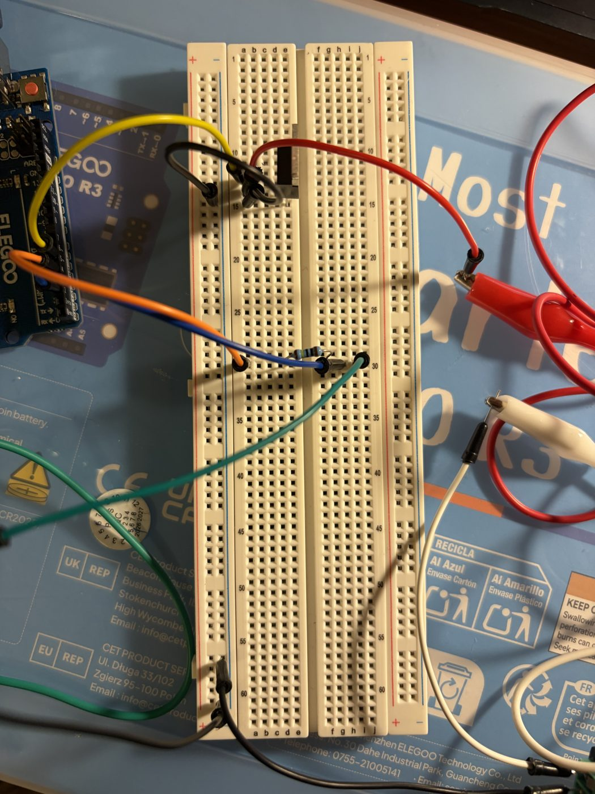
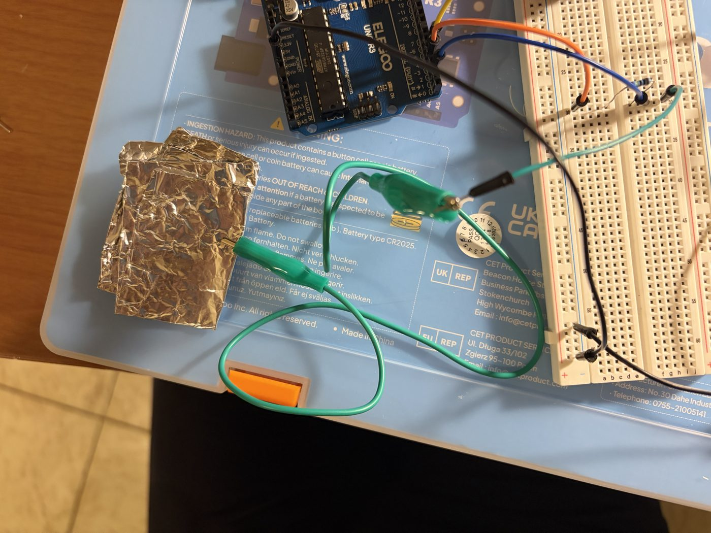
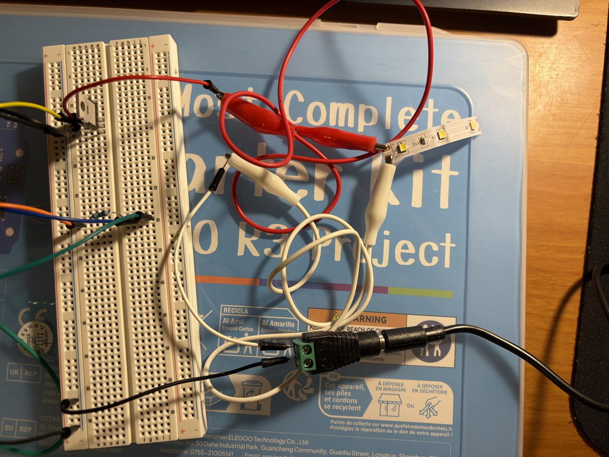
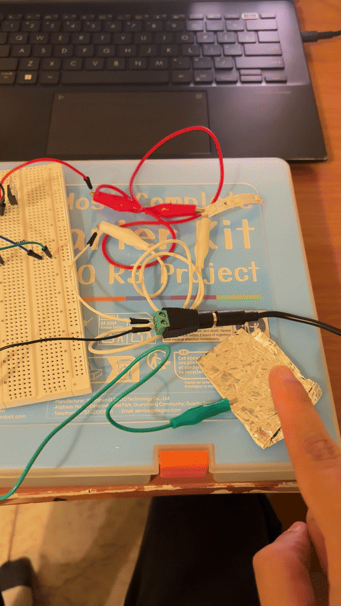
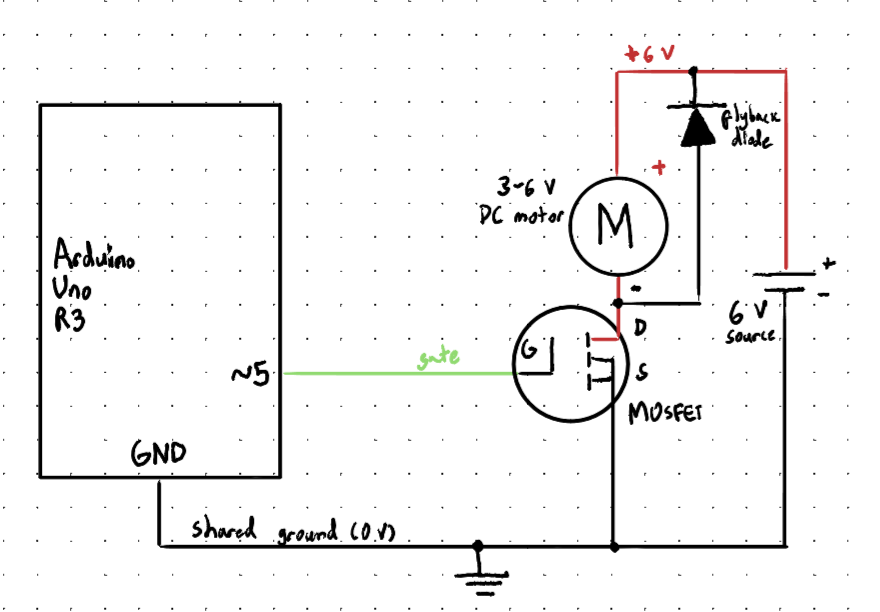
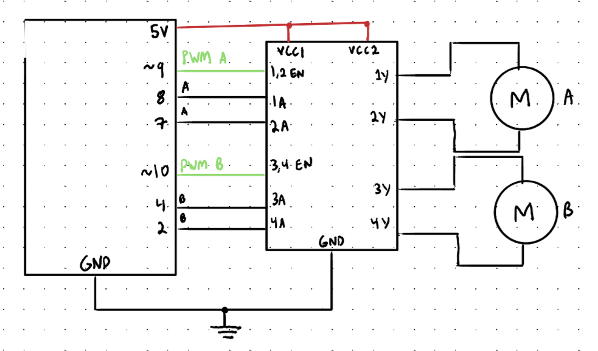

A 12 V LED strip whose brightness is set by a capacitive touch pad. The Arduino can't power the strip
itself, so an N-MOSFET switches the strip's 12 V supply using a PWM signal from
analogWrite().
CapacitiveSensor.h: reads the touch pad.
A 5V gate from the Arduino is enough to fully turn on the MOSFET. According to the datasheet it has a max drain current of 47 A.
I used a 1 branch LED strip so it draws 12 mA at full brightness. Since all of the current goes through the MOSFET drain to source the MOSFET carries 12 mA.
Current through the MOSFET: I = 1 branch × 12 mA = 12 mA = 0.012 A MOSFET max I_D: 47 A Margin: 47 A / 0.012 A ≈ 3,900× under the limit Worst case: the adapter can only supply 2 A, so even a short could only push 2 A, which is still 23× under the 47 A limit. Heat in the MOSFET (R_DS(on) = 0.025 Ω at V_GS = 5 V): P = I² × R = (0.012 A)² × 0.025 Ω ≈ 0.0000036 W → no heat, no heatsink needed
The strip already has its own resistor built in. Each branch is a few LEDs in series with a small resistor printed on the strip, made for 12 V. That resistor is what sets the 12 mA, so I don't need to add one.
The touch sensor works the same way as in A4. The library sets the send pin (4) high and times how long the receive pin (2) takes to go high too. The foil pad acts like a capacitor. When I touch it, my body adds more capacitance, so the pin takes longer to charge. The time depends on the resistor and the capacitance:
τ = R × C No touch (pad ≈ 10 pF): 1 MΩ × 10 pF = 10 µs Touching (hand ≈ 100 pF): 1 MΩ × 100 pF = 100 µs
A touch takes about 10 times longer to charge, so the reading is much bigger. In my Serial Monitor output the untouched reading stayed around 20–46, and a touch jumped to about 10,600. I picked 1 MΩ because the library suggests it for direct touch. A bigger resistor would detect my hand from further away, but it would also be slower and pick up more noise. The current through it is tiny:
I = V / R = 5 V / 1 MΩ = 0.005 mA (max, only while the pad is charging)





// Library for reading the capacitive touch sensor
#include <CapacitiveSensor.h>
// Send pin for the touch pad
const int SEND_PIN = 4;
// Receive pin for the touch pad
const int RECEIVE_PIN = 2;
// PWM pin wired to the MOSFET
const int GATE_PIN = 5;
// Number of samples the library adds together for each reading
const int SAMPLES = 10;
// Number of readings averaged at startup to find the base value
const int CALIBRATION_READS = 50;
// Changes smaller than this don't register to reduce noise
const long NOISE_THRESHOLD = 30;
// How far above the baseline a full-hand touch reads (I measured this in A4)
const long TOUCH_RANGE = 1000;
// Highest analogWrite() value: 255 = gate HIGH 100% of the time = full brightness
const int MAX_BRIGHTNESS = 255;
// Milliseconds to wait between readings (smoothing)
const int LOOP_DELAY = 10;
// Set up the capacitive sensor
CapacitiveSensor touchSensor = CapacitiveSensor(SEND_PIN, RECEIVE_PIN);
// Untouched sensor reading
long baseline = 0;
// Smoothed touch strength (0 = no touch, TOUCH_RANGE = full hand)
long smoothedTouch = 0;
void setup() {
// Set the gate pin as an OUTPUT
// As an OUTPUT it starts LOW (0 V), so the MOSFET is off and the strip is dark.
pinMode(GATE_PIN, OUTPUT);
// Make sure the LED starts at 0 V
analogWrite(GATE_PIN, 0);
// Start the Serial Monitor at 115200 baud
Serial.begin(115200);
// Turn off the library's auto-calibration because this sketch calibrates itself
touchSensor.set_CS_AutocaL_Millis(0xFFFFFFFF);
// Tell the user not to touch the pad
Serial.println("Calibrating... don't touch the pad");
// Running total of the calibration readings
long total = 0;
// Take several readings with no touch
for (int i = 0; i < CALIBRATION_READS; i++) {
// Add one 10-sample reading to the total
total += touchSensor.capacitiveSensor(SAMPLES);
// Short pause between readings
delay(10);
}
// The average untouched reading becomes the baseline
baseline = total / CALIBRATION_READS;
// Print the baseline label
Serial.print("Baseline: ");
// Print the baseline value
Serial.println(baseline);
}
void loop() {
// Get the sensor value with 10 samples
long raw = touchSensor.capacitiveSensor(SAMPLES);
// Subtract the baseline
long touch = raw - baseline;
// If the change is too small to be a real touch
if (touch < NOISE_THRESHOLD) {
// Treat it as no touch
touch = 0;
}
// Keep the touch value between 0 and a full touch
touch = constrain(touch, 0, TOUCH_RANGE);
// Smooth out noise and fade gently: 7 parts old value, 1 part new value
smoothedTouch = (smoothedTouch * 7 + touch) / 8;
// Turn touch strength (0 to 1000) into a PWM value (0 to 255)
int brightness = map(smoothedTouch, 0, TOUCH_RANGE, 0, MAX_BRIGHTNESS);
// Send PWM to the MOSFET
analogWrite(GATE_PIN, brightness);
// Print the raw value label
Serial.print("raw: ");
// Print the raw sensor value
Serial.print(raw);
// Print the touch label
Serial.print(" | touch: ");
// Print the smoothed touch value
Serial.print(smoothedTouch);
// Print the PWM label
Serial.print(" | pwm: ");
// Print the analogWrite() value
Serial.print(brightness);
// Print the gate voltage label
Serial.print(" | avg gate V: ");
// Print the average gate voltage (5 V times the fraction of time the pin is HIGH)
Serial.println(5.0 * brightness / 255.0);
// Wait a little before the next reading
delay(LOOP_DELAY);
}GATE_PIN = 5: a PWM (~) pin, so analogWrite() works on it.SEND_PIN = 4 and RECEIVE_PIN = 2: same touch sensor wiring as A4.SAMPLES, CALIBRATION_READS, NOISE_THRESHOLD: the same values that worked for the foil pad in A4. Untouched readings stayed between 20 and 46, so a threshold of 30 above the baseline (20 + 30 = 50) never triggered by accident.TOUCH_RANGE = 1000: kept from A4. With this setup a touch reads about 10,600, so any touch is above 1000 and counts as a full touch. That makes the pad work like a button: touching fades the strip up and letting go fades it out.MAX_BRIGHTNESS = 255: the largest analogWrite() value. 255 keeps the gate at 5 V all the time, so the strip is fully on.(smoothedTouch * 7 + touch) / 8: slower smoothing than A4 (3:1), so the strip fades in and out instead of flickering.LOOP_DELAY = 10: a short pause between readings so the fade is smooth and visible instead of instant. I noticed this being an issue during the in class activity.
Part of the Serial Monitor output for one touch (ellipses = skipped lines). Each line shows the raw sensor
reading, the smoothed touch value, the analogWrite() value, and the average gate voltage.
Calibrating... don't touch the pad
Baseline: 20
raw: 28 | touch: 0 | pwm: 0 | avg gate V: 0.00
raw: 37 | touch: 0 | pwm: 0 | avg gate V: 0.00
raw: 27 | touch: 0 | pwm: 0 | avg gate V: 0.00
...
raw: 42 | touch: 0 | pwm: 0 | avg gate V: 0.00
raw: 41 | touch: 0 | pwm: 0 | avg gate V: 0.00
raw: 12646 | touch: 125 | pwm: 31 | avg gate V: 0.61
raw: 10628 | touch: 234 | pwm: 59 | avg gate V: 1.16
raw: 10651 | touch: 329 | pwm: 83 | avg gate V: 1.63
raw: 10647 | touch: 412 | pwm: 105 | avg gate V: 2.06
raw: 10606 | touch: 485 | pwm: 123 | avg gate V: 2.41
raw: 10631 | touch: 549 | pwm: 139 | avg gate V: 2.73
...
raw: 10650 | touch: 918 | pwm: 234 | avg gate V: 4.59
raw: 10683 | touch: 928 | pwm: 236 | avg gate V: 4.63
raw: 7511 | touch: 937 | pwm: 238 | avg gate V: 4.67
raw: 51 | touch: 823 | pwm: 209 | avg gate V: 4.10
raw: 36 | touch: 720 | pwm: 183 | avg gate V: 3.59
raw: 41 | touch: 630 | pwm: 160 | avg gate V: 3.14
raw: 41 | touch: 551 | pwm: 140 | avg gate V: 2.75
...
raw: 34 | touch: 8 | pwm: 2 | avg gate V: 0.04
raw: 34 | touch: 7 | pwm: 1 | avg gate V: 0.02
raw: 35 | touch: 3 | pwm: 0 | avg gate V: 0.00
raw: 31 | touch: 0 | pwm: 0 | avg gate V: 0.00With no touch the raw reading stays around 20–46, which is under the noise threshold, so the strip stays off. When I touch the pad the raw reading jumps to about 10,600. The smoothing makes the touch value climb 1/8 of the way to 1000 on each reading, so the PWM value and the average gate voltage rise step by step (31, 59, 83...) and the strip fades up. I let go before it reached 255, at pwm 238 (4.67 V average). When I let go, the raw reading drops back to about 40 and the touch value shrinks by 1/8 each reading, so the strip fades back out to 0.
My MOSFET says IRLZ44N on it. Pin 2 is the drain and pin 3 is the source. According to the datasheet, the absolute maximum continuous drain current is 47 A (VGS = 10 V, case at 25 °C).

Motor current at 6 V: 0.16 A running (no load), 1.5 A stalled
1N4007 max average current: 1 A → OK while running; the diode only carries current
for a moment after each switch-off
1N4007 max surge current: 30 A → OK, even the 1.5 A stall current is far below this
1N4007 max reverse voltage: 1000 V → OK, it only ever sees 6 V
MOSFET max drain current: 47 A → OK, about 30× headroom even at stall
Parts with datasheets I could use:

// Pins for Motor A
ENA = 9 // PWM speed
IN1 = 8 // direction
IN2 = 7 // direction
// Pins for Motor B
ENB = 10 // PWM speed
IN3 = 4 // direction
IN4 = 2 // direction
setup:
set ENA, IN1, IN2, ENB, IN3, IN4 as OUTPUT // all start LOW, so both motors are off
// forward = first input HIGH, second LOW; backward = the opposite
motorA(direction):
if direction == FORWARD: IN1 = HIGH, IN2 = LOW
if direction == BACKWARD: IN1 = LOW, IN2 = HIGH
analogWrite(ENA, 200) // about 80% speed
motorB(direction):
if direction == FORWARD: IN3 = HIGH, IN4 = LOW
if direction == BACKWARD: IN3 = LOW, IN4 = HIGH
analogWrite(ENB, 200) // about 80% speed
stopBoth():
analogWrite(ENA, 0)
analogWrite(ENB, 0)
loop:
// 1. both forward
motorA(FORWARD); motorB(FORWARD); wait 2 s; stopBoth(); wait 0.5 s
// 2. both backward
motorA(BACKWARD); motorB(BACKWARD); wait 2 s; stopBoth(); wait 0.5 s
// 3. A forward, B backward (spins in place one way)
motorA(FORWARD); motorB(BACKWARD); wait 2 s; stopBoth(); wait 0.5 s
// 4. A backward, B forward (spins in place the other way)
motorA(BACKWARD); motorB(FORWARD); wait 2 s; stopBoth(); wait 0.5 sThe short stop between each step lets the motors slow down before they change direction, so they don't pull a big current spike by reversing at full speed.
I used a Claude chatbot for the following: